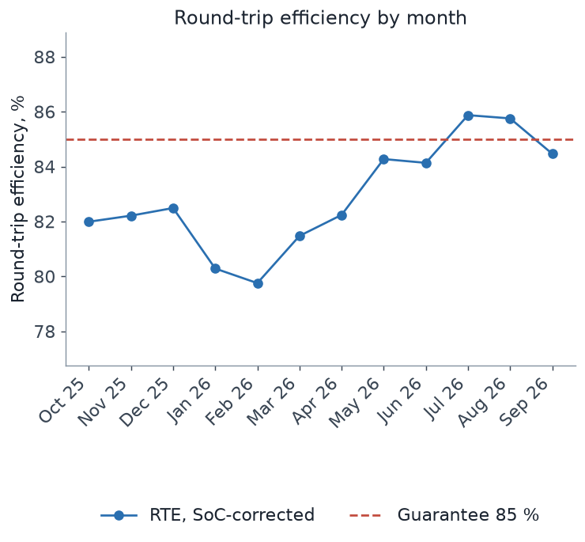
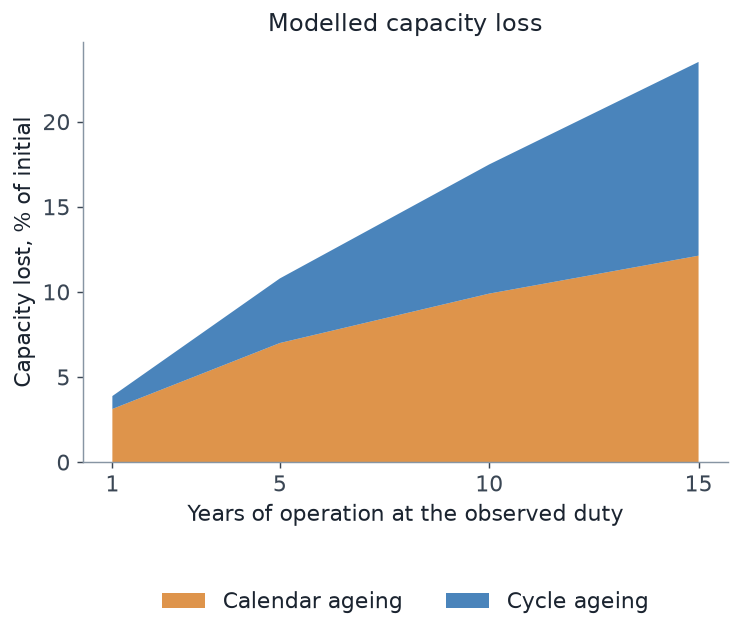

Key figures
| KPI | Value | Guarantee or limit | Status |
|---|---|---|---|
| Availability, time-weighted (declared, PASA) | 97.5 % | 97.0 % | ok |
| Offered availability (bids, includes energy limits) | 68.1 % | ||
| RTE, mean of months, SoC-corrected | 82.9 % | 85.0 % | not met |
| Cycles per year (EFC) | 337.4 | 365.0 | ok |
| Mean state of charge | 48.2 % | ||
| Technical outage, hours per year | 215.9 | ||
| Months meeting the availability guarantee | 11 of 12 | ||
| Months meeting the RTE guarantee | 2 of 12 | ||
| Months within the cycle limit | 9 of 12 | ||
| Trend of usable energy window, % per year (market data) | -0.70 | ||
| Modelled state of health after 1 year | 96.1 % | ||
| Modelled state of health after 10 years | 82.5 % |
Availability

Round-trip efficiency

Monthly table
| Month | Availability | Offered availability | RTE | Charged, MWh | Discharged, MWh | Cycles (EFC) | Mean SoC | Usable energy, MWh | Outage, h |
|---|---|---|---|---|---|---|---|---|---|
| 2025-10 | 99.9 % | 64.9 % | 82.0 % | 15 454 | 12 667 | 31.7 | 43.4 % | 438.3 | 0.4 |
| 2025-11 | 97.1 % | 61.7 % | 82.2 % | 12 770 | 10 389 | 26.0 | 47.8 % | 437.0 | 20.9 |
| 2025-12 | 98.3 % | 63.3 % | 82.5 % | 13 470 | 11 199 | 28.0 | 45.1 % | 441.5 | 13.0 |
| 2026-01 | 97.5 % | 57.8 % | 80.3 % | 11 066 | 8 837 | 22.1 | 45.4 % | 439.1 | 18.5 |
| 2026-02 | 99.7 % | 79.2 % | 79.8 % | 10 553 | 8 483 | 21.2 | 58.5 % | 439.1 | 2.0 |
| 2026-03 | 99.7 % | 68.9 % | 81.5 % | 13 206 | 10 693 | 26.7 | 48.7 % | 437.7 | 2.5 |
| 2026-04 | 99.2 % | 66.1 % | 82.2 % | 12 347 | 10 211 | 25.5 | 40.5 % | 436.5 | 5.5 |
| 2026-05 | 99.8 % | 65.4 % | 84.3 % | 14 595 | 12 304 | 30.8 | 45.9 % | 435.0 | 1.2 |
| 2026-06 | 99.5 % | 82.7 % | 84.1 % | 12 876 | 10 803 | 27.0 | 53.6 % | 436.5 | 3.8 |
| 2026-07 | 98.7 % | 80.5 % | 85.9 % | 18 122 | 15 594 | 39.0 | 55.5 % | 435.9 | 9.5 |
| 2026-08 | 98.1 % | 73.0 % | 85.8 % | 17 073 | 14 641 | 36.6 | 55.3 % | 437.1 | 13.9 |
| 2026-09 | 82.7 % | 54.4 % | 84.5 % | 11 240 | 9 155 | 22.9 | 38.2 % | 438.1 | 124.7 |
Compliance by month
| Month | availability_ok | rte_ok | cycles_ok |
|---|---|---|---|
| 2025-10 | yes | NO | NO |
| 2025-11 | yes | NO | yes |
| 2025-12 | yes | NO | yes |
| 2026-01 | yes | NO | yes |
| 2026-02 | yes | NO | yes |
| 2026-03 | yes | NO | yes |
| 2026-04 | yes | NO | yes |
| 2026-05 | yes | NO | yes |
| 2026-06 | yes | NO | yes |
| 2026-07 | yes | yes | NO |
| 2026-08 | yes | yes | NO |
| 2026-09 | NO | NO | yes |
State of health

| years | Calendar loss | Cycle loss | State of health |
|---|---|---|---|
| 1 | 3.13 % | 0.76 % | 96.1 % |
| 5 | 7.01 % | 3.79 % | 89.2 % |
| 10 | 9.91 % | 7.59 % | 82.5 % |
| 15 | 12.14 % | 11.38 % | 76.5 % |
Market data: RTE is at the SCADA point (auxiliaries behind the meter are invisible), availability is the physical availability the operator declared with its bids (PASA), not a measurement.
Usable energy follows the BMS window, so a falling capacity does not show in it directly; the ageing model projection is a model, not a measurement.